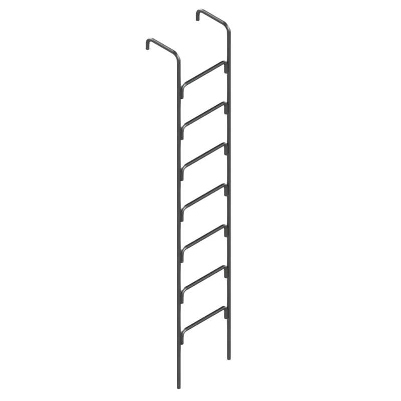
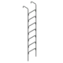

Общая информация и назначение
Водопроводные лестницы ВЛ-2 (Л-2, Л-19) — это навесные металлические лестницы, предназначенные для спуска в водопроводные колодцы и обслуживания запорной арматуры. Изготавливаются из гладкой арматуры класса А1.
Доступны три исполнения по толщине прутка:
- Ø22 мм: облегчённое исполнение, лёгкое и универсальное
- Ø25 мм: стандартное исполнение, оптимальный баланс прочности и веса
- Ø28 мм: усиленное исполнение, повышенная жёсткость и несущая способность
В отличие от стационарных стремянок, лестницы ВЛ-2 навешиваются на кольцо колодца с помощью мощных крюков R35 — это позволяет быстро устанавливать и снимать лестницу при проведении ремонтных работ, а также переносить её между колодцами.
Основные характеристики
- Марка: ВЛ-2 (Л-2, Л-19)
- Толщина прутка: Ø22 мм, Ø25 мм или Ø28 мм
- Ширина: 424 мм
- Длина (высота): от 100 см до 1170 см
- Направляющие: Гладкая арматура А1
- Ступени: Отрезки гладкой арматуры А1
- Крепление: Крюки R35 для навешивания на кольцо колодца
Подробнее: материалы, ГОСТы, условия эксплуатации
Дополнительные технические данные
- Артикулы: ВЛ-1 … ВЛ-11.7 (108 типоразмеров для каждого диаметра)
- Вес (Ø22 мм): от 14 до 142 кг
- Вес (Ø25 мм): от 18,1 до 183,4 кг
- Вес (Ø28 мм): от 22,7 до 229,9 кг
- Материал: Гладкая арматура класса А1 по ГОСТ 5781
- Шаг ступеней: 300 мм
- Антикоррозионная защита: По требованию заказчика — грунт и эмаль
Соответствие стандартам и условия эксплуатации
Лестницы ВЛ-2 изготовлены в соответствии с требованиями к водопроводным колодцам и предназначены для эксплуатации внутри железобетонных и кирпичных колодцев водопроводных сетей. Крепление крюками к горловине колодца обеспечивает надёжную фиксацию и удобство спуска/подъёма.
Материалы и производство
Основной материал — гладкая арматура класса А1 по ГОСТ 5781. Направляющие обеспечивают жёсткость и долговечность конструкции. Ступени из отрезков той же арматуры вварены в направляющие с шагом 300 мм. По требованию заказчика возможно покрытие грунт-эмалью для усиленной защиты от коррозии.

Стоимость водопроводных лестниц ВЛ-2
| Фото | Изделие | Длина, см | Ширина, см | Масса, кг | Цена | ед. изм. | Количество | Корзина |
|---|---|---|---|---|---|---|---|---|
 |
Водопроводная лестница ВЛ-2 (Л-2 Л-19) 1 Ø22 мм | 100 | 42.4 | 14 | от 2 520 руб. | 1 шт | ||
| Водопроводная лестница ВЛ-2 (Л-2 Л-19) 1.1 Ø22 мм | 110 | 42.4 | 15 | от 2 700 руб. | 1 шт | |||
| Водопроводная лестница ВЛ-2 (Л-2 Л-19) 1.2 Ø22 мм | 120 | 42.4 | 16 | от 2 880 руб. | 1 шт | |||
| Водопроводная лестница ВЛ-2 (Л-2 Л-19) 1.3 Ø22 мм | 130 | 42.4 | 17 | от 3 060 руб. | 1 шт | |||
| Водопроводная лестница ВЛ-2 (Л-2 Л-19) 1.4 Ø22 мм | 140 | 42.4 | 18 | от 3 240 руб. | 1 шт | |||
| Водопроводная лестница ВЛ-2 (Л-2 Л-19) 1.5 Ø22 мм | 150 | 42.4 | 19 | от 3 420 руб. | 1 шт | |||
| Водопроводная лестница ВЛ-2 (Л-2 Л-19) 1.6 Ø22 мм | 160 | 42.4 | 20 | от 3 600 руб. | 1 шт | |||
| Водопроводная лестница ВЛ-2 (Л-2 Л-19) 1.7 Ø22 мм | 170 | 42.4 | 21 | от 3 780 руб. | 1 шт | |||
| Водопроводная лестница ВЛ-2 (Л-2 Л-19) 1.8 Ø22 мм | 180 | 42.4 | 22 | от 3 960 руб. | 1 шт | |||
| Водопроводная лестница ВЛ-2 (Л-2 Л-19) 1.9 Ø22 мм | 190 | 42.4 | 23 | от 4 140 руб. | 1 шт | |||
| Водопроводная лестница ВЛ-2 (Л-2 Л-19) 2 Ø22 мм | 200 | 42.4 | 27 | от 4 860 руб. | 1 шт | |||
| Водопроводная лестница ВЛ-2 (Л-2 Л-19) 2.1 Ø22 мм | 210 | 42.4 | 28 | от 5 040 руб. | 1 шт | |||
| Водопроводная лестница ВЛ-2 (Л-2 Л-19) 2.2 Ø22 мм | 220 | 42.4 | 29 | от 5 220 руб. | 1 шт | |||
| Водопроводная лестница ВЛ-2 (Л-2 Л-19) 2.3 Ø22 мм | 230 | 42.4 | 30 | от 5 400 руб. | 1 шт | |||
| Водопроводная лестница ВЛ-2 (Л-2 Л-19) 2.4 Ø22 мм | 240 | 42.4 | 31 | от 5 580 руб. | 1 шт | |||
| Водопроводная лестница ВЛ-2 (Л-2 Л-19) 2.5 Ø22 мм | 250 | 42.4 | 34 | от 6 120 руб. | 1 шт | |||
| Водопроводная лестница ВЛ-2 (Л-2 Л-19) 2.6 Ø22 мм | 260 | 42.4 | 35 | от 6 300 руб. | 1 шт | |||
| Водопроводная лестница ВЛ-2 (Л-2 Л-19) 2.7 Ø22 мм | 270 | 42.4 | 36 | от 6 480 руб. | 1 шт | |||
| Водопроводная лестница ВЛ-2 (Л-2 Л-19) 2.8 Ø22 мм | 280 | 42.4 | 37 | от 6 660 руб. | 1 шт | |||
| Водопроводная лестница ВЛ-2 (Л-2 Л-19) 2.9 Ø22 мм | 290 | 42.4 | 38 | от 6 840 руб. | 1 шт | |||
| Водопроводная лестница ВЛ-2 (Л-2 Л-19) 3 Ø22 мм | 300 | 42.4 | 39 | от 7 020 руб. | 1 шт | |||
| Водопроводная лестница ВЛ-2 (Л-2 Л-19) 3.1 Ø22 мм | 310 | 42.4 | 40 | от 7 200 руб. | 1 шт | |||
| Водопроводная лестница ВЛ-2 (Л-2 Л-19) 3.2 Ø22 мм | 320 | 42.4 | 41 | от 7 380 руб. | 1 шт | |||
| Водопроводная лестница ВЛ-2 (Л-2 Л-19) 3.3 Ø22 мм | 330 | 42.4 | 42 | от 7 560 руб. | 1 шт | |||
| Водопроводная лестница ВЛ-2 (Л-2 Л-19) 3.4 Ø22 мм | 340 | 42.4 | 43 | от 7 740 руб. | 1 шт | |||
| Водопроводная лестница ВЛ-2 (Л-2 Л-19) 3.5 Ø22 мм | 350 | 42.4 | 45 | от 8 100 руб. | 1 шт | |||
| Водопроводная лестница ВЛ-2 (Л-2 Л-19) 3.6 Ø22 мм | 360 | 42.4 | 46 | от 8 280 руб. | 1 шт | |||
| Водопроводная лестница ВЛ-2 (Л-2 Л-19) 3.7 Ø22 мм | 370 | 42.4 | 48 | от 8 640 руб. | 1 шт | |||
| Водопроводная лестница ВЛ-2 (Л-2 Л-19) 3.8 Ø22 мм | 380 | 42.4 | 49 | от 8 820 руб. | 1 шт | |||
| Водопроводная лестница ВЛ-2 (Л-2 Л-19) 3.9 Ø22 мм | 390 | 42.4 | 50 | от 9 000 руб. | 1 шт | |||
| Водопроводная лестница ВЛ-2 (Л-2 Л-19) 4 Ø22 мм | 400 | 42.4 | 51 | от 9 180 руб. | 1 шт | |||
| Водопроводная лестница ВЛ-2 (Л-2 Л-19) 4.1 Ø22 мм | 410 | 42.4 | 52 | от 9 360 руб. | 1 шт | |||
| Водопроводная лестница ВЛ-2 (Л-2 Л-19) 4.2 Ø22 мм | 420 | 42.4 | 53 | от 9 540 руб. | 1 шт | |||
| Водопроводная лестница ВЛ-2 (Л-2 Л-19) 4.3 Ø22 мм | 430 | 42.4 | 54 | от 9 720 руб. | 1 шт | |||
| Водопроводная лестница ВЛ-2 (Л-2 Л-19) 4.4 Ø22 мм | 440 | 42.4 | 55 | от 9 900 руб. | 1 шт | |||
| Водопроводная лестница ВЛ-2 (Л-2 Л-19) 4.5 Ø22 мм | 450 | 42.4 | 57 | от 10 260 руб. | 1 шт | |||
| Водопроводная лестница ВЛ-2 (Л-2 Л-19) 4.6 Ø22 мм | 460 | 42.4 | 58 | от 10 440 руб. | 1 шт | |||
| Водопроводная лестница ВЛ-2 (Л-2 Л-19) 4.7 Ø22 мм | 470 | 42.4 | 59 | от 10 620 руб. | 1 шт | |||
| Водопроводная лестница ВЛ-2 (Л-2 Л-19) 4.8 Ø22 мм | 480 | 42.4 | 60 | от 10 800 руб. | 1 шт | |||
| Водопроводная лестница ВЛ-2 (Л-2 Л-19) 4.9 Ø22 мм | 490 | 42.4 | 61 | от 10 980 руб. | 1 шт | |||
| Водопроводная лестница ВЛ-2 (Л-2 Л-19) 5 Ø22 мм | 500 | 42.4 | 64 | от 11 520 руб. | 1 шт | |||
| Водопроводная лестница ВЛ-2 (Л-2 Л-19) 5.1 Ø22 мм | 510 | 42.4 | 65 | от 11 700 руб. | 1 шт | |||
| Водопроводная лестница ВЛ-2 (Л-2 Л-19) 5.2 Ø22 мм | 520 | 42.4 | 66 | от 11 880 руб. | 1 шт | |||
| Водопроводная лестница ВЛ-2 (Л-2 Л-19) 5.3 Ø22 мм | 530 | 42.4 | 67 | от 12 060 руб. | 1 шт | |||
| Водопроводная лестница ВЛ-2 (Л-2 Л-19) 5.4 Ø22 мм | 540 | 42.4 | 68 | от 12 240 руб. | 1 шт | |||
| Водопроводная лестница ВЛ-2 (Л-2 Л-19) 5.5 Ø22 мм | 550 | 42.4 | 71 | от 12 780 руб. | 1 шт | |||
| Водопроводная лестница ВЛ-2 (Л-2 Л-19) 5.6 Ø22 мм | 560 | 42.4 | 72 | от 12 960 руб. | 1 шт | |||
| Водопроводная лестница ВЛ-2 (Л-2 Л-19) 5.7 Ø22 мм | 570 | 42.4 | 73 | от 13 140 руб. | 1 шт | |||
| Водопроводная лестница ВЛ-2 (Л-2 Л-19) 5.8 Ø22 мм | 580 | 42.4 | 74 | от 13 320 руб. | 1 шт | |||
| Водопроводная лестница ВЛ-2 (Л-2 Л-19) 5.9 Ø22 мм | 590 | 42.4 | 75 | от 13 500 руб. | 1 шт | |||
| Водопроводная лестница ВЛ-2 (Л-2 Л-19) 6 Ø22 мм | 600 | 42.4 | 77 | от 13 860 руб. | 1 шт | |||
| Водопроводная лестница ВЛ-2 (Л-2 Л-19) 6.1 Ø22 мм | 610 | 42.4 | 78 | от 14 040 руб. | 1 шт | |||
| Водопроводная лестница ВЛ-2 (Л-2 Л-19) 6.2 Ø22 мм | 620 | 42.4 | 79 | от 14 220 руб. | 1 шт | |||
| Водопроводная лестница ВЛ-2 (Л-2 Л-19) 6.3 Ø22 мм | 630 | 42.4 | 80 | от 14 400 руб. | 1 шт | |||
| Водопроводная лестница ВЛ-2 (Л-2 Л-19) 6.4 Ø22 мм | 640 | 42.4 | 81 | от 14 580 руб. | 1 шт | |||
| Водопроводная лестница ВЛ-2 (Л-2 Л-19) 6.5 Ø22 мм | 650 | 42.4 | 82 | от 14 760 руб. | 1 шт | |||
| Водопроводная лестница ВЛ-2 (Л-2 Л-19) 6.6 Ø22 мм | 660 | 42.4 | 83 | от 14 940 руб. | 1 шт | |||
| Водопроводная лестница ВЛ-2 (Л-2 Л-19) 6.7 Ø22 мм | 670 | 42.4 | 84 | от 15 120 руб. | 1 шт | |||
| Водопроводная лестница ВЛ-2 (Л-2 Л-19) 6.8 Ø22 мм | 680 | 42.4 | 85 | от 15 300 руб. | 1 шт | |||
| Водопроводная лестница ВЛ-2 (Л-2 Л-19) 6.9 Ø22 мм | 690 | 42.4 | 86 | от 15 480 руб. | 1 шт | |||
| Водопроводная лестница ВЛ-2 (Л-2 Л-19) 7 Ø22 мм | 700 | 42.4 | 89 | от 16 020 руб. | 1 шт | |||
| Водопроводная лестница ВЛ-2 (Л-2 Л-19) 7.1 Ø22 мм | 710 | 42.4 | 90 | от 16 200 руб. | 1 шт | |||
| Водопроводная лестница ВЛ-2 (Л-2 Л-19) 7.2 Ø22 мм | 720 | 42.4 | 91 | от 16 380 руб. | 1 шт | |||
| Водопроводная лестница ВЛ-2 (Л-2 Л-19) 7.3 Ø22 мм | 730 | 42.4 | 92 | от 16 560 руб. | 1 шт | |||
| Водопроводная лестница ВЛ-2 (Л-2 Л-19) 7.4 Ø22 мм | 740 | 42.4 | 93 | от 16 740 руб. | 1 шт | |||
| Водопроводная лестница ВЛ-2 (Л-2 Л-19) 7.5 Ø22 мм | 750 | 42.4 | 94 | от 16 920 руб. | 1 шт | |||
| Водопроводная лестница ВЛ-2 (Л-2 Л-19) 7.6 Ø22 мм | 760 | 42.4 | 95 | от 17 100 руб. | 1 шт | |||
| Водопроводная лестница ВЛ-2 (Л-2 Л-19) 7.7 Ø22 мм | 770 | 42.4 | 96 | от 17 280 руб. | 1 шт | |||
| Водопроводная лестница ВЛ-2 (Л-2 Л-19) 7.8 Ø22 мм | 780 | 42.4 | 97 | от 17 460 руб. | 1 шт | |||
| Водопроводная лестница ВЛ-2 (Л-2 Л-19) 7.9 Ø22 мм | 790 | 42.4 | 98 | от 17 640 руб. | 1 шт | |||
| Водопроводная лестница ВЛ-2 (Л-2 Л-19) 8 Ø22 мм | 800 | 42.4 | 100 | от 18 000 руб. | 1 шт | |||
| Водопроводная лестница ВЛ-2 (Л-2 Л-19) 8.1 Ø22 мм | 810 | 42.4 | 101 | от 18 180 руб. | 1 шт | |||
| Водопроводная лестница ВЛ-2 (Л-2 Л-19) 8.2 Ø22 мм | 820 | 42.4 | 102 | от 18 360 руб. | 1 шт | |||
| Водопроводная лестница ВЛ-2 (Л-2 Л-19) 8.3 Ø22 мм | 830 | 42.4 | 103 | от 18 540 руб. | 1 шт | |||
| Водопроводная лестница ВЛ-2 (Л-2 Л-19) 8.4 Ø22 мм | 840 | 42.4 | 104 | от 18 720 руб. | 1 шт | |||
| Водопроводная лестница ВЛ-2 (Л-2 Л-19) 8.5 Ø22 мм | 850 | 42.4 | 105 | от 18 900 руб. | 1 шт | |||
| Водопроводная лестница ВЛ-2 (Л-2 Л-19) 8.6 Ø22 мм | 860 | 42.4 | 106 | от 19 080 руб. | 1 шт | |||
| Водопроводная лестница ВЛ-2 (Л-2 Л-19) 8.7 Ø22 мм | 870 | 42.4 | 107 | от 19 260 руб. | 1 шт | |||
| Водопроводная лестница ВЛ-2 (Л-2 Л-19) 8.8 Ø22 мм | 880 | 42.4 | 108 | от 19 440 руб. | 1 шт | |||
| Водопроводная лестница ВЛ-2 (Л-2 Л-19) 8.9 Ø22 мм | 890 | 42.4 | 109 | от 19 620 руб. | 1 шт | |||
| Водопроводная лестница ВЛ-2 (Л-2 Л-19) 9 Ø22 мм | 900 | 42.4 | 112 | от 20 160 руб. | 1 шт | |||
| Водопроводная лестница ВЛ-2 (Л-2 Л-19) 9.1 Ø22 мм | 910 | 42.4 | 113 | от 20 340 руб. | 1 шт | |||
| Водопроводная лестница ВЛ-2 (Л-2 Л-19) 9.2 Ø22 мм | 920 | 42.4 | 114 | от 20 520 руб. | 1 шт | |||
| Водопроводная лестница ВЛ-2 (Л-2 Л-19) 9.3 Ø22 мм | 930 | 42.4 | 115 | от 20 700 руб. | 1 шт | |||
| Водопроводная лестница ВЛ-2 (Л-2 Л-19) 9.4 Ø22 мм | 940 | 42.4 | 116 | от 20 880 руб. | 1 шт | |||
| Водопроводная лестница ВЛ-2 (Л-2 Л-19) 9.5 Ø22 мм | 950 | 42.4 | 117 | от 21 060 руб. | 1 шт | |||
| Водопроводная лестница ВЛ-2 (Л-2 Л-19) 9.6 Ø22 мм | 960 | 42.4 | 118 | от 21 240 руб. | 1 шт | |||
| Водопроводная лестница ВЛ-2 (Л-2 Л-19) 9.7 Ø22 мм | 970 | 42.4 | 119 | от 21 420 руб. | 1 шт | |||
| Водопроводная лестница ВЛ-2 (Л-2 Л-19) 9.8 Ø22 мм | 980 | 42.4 | 120 | от 21 600 руб. | 1 шт | |||
| Водопроводная лестница ВЛ-2 (Л-2 Л-19) 9.9 Ø22 мм | 990 | 42.4 | 121 | от 21 780 руб. | 1 шт | |||
| Водопроводная лестница ВЛ-2 (Л-2 Л-19) 10 Ø22 мм | 1000 | 42.4 | 124 | от 22 320 руб. | 1 шт | |||
| Водопроводная лестница ВЛ-2 (Л-2 Л-19) 10.1 Ø22 мм | 1010 | 42.4 | 125 | от 22 500 руб. | 1 шт | |||
| Водопроводная лестница ВЛ-2 (Л-2 Л-19) 10.2 Ø22 мм | 1020 | 42.4 | 126 | от 22 680 руб. | 1 шт | |||
| Водопроводная лестница ВЛ-2 (Л-2 Л-19) 10.3 Ø22 мм | 1030 | 42.4 | 127 | от 22 860 руб. | 1 шт | |||
| Водопроводная лестница ВЛ-2 (Л-2 Л-19) 10.4 Ø22 мм | 1040 | 42.4 | 128 | от 23 040 руб. | 1 шт | |||
| Водопроводная лестница ВЛ-2 (Л-2 Л-19) 10.5 Ø22 мм | 1050 | 42.4 | 129 | от 23 220 руб. | 1 шт | |||
| Водопроводная лестница ВЛ-2 (Л-2 Л-19) 10.6 Ø22 мм | 1060 | 42.4 | 130 | от 23 400 руб. | 1 шт | |||
| Водопроводная лестница ВЛ-2 (Л-2 Л-19) 10.7 Ø22 мм | 1070 | 42.4 | 131 | от 23 580 руб. | 1 шт | |||
| Водопроводная лестница ВЛ-2 (Л-2 Л-19) 10.8 Ø22 мм | 1080 | 42.4 | 132 | от 23 760 руб. | 1 шт | |||
| Водопроводная лестница ВЛ-2 (Л-2 Л-19) 10.9 Ø22 мм | 1090 | 42.4 | 133 | от 23 940 руб. | 1 шт | |||
| Водопроводная лестница ВЛ-2 (Л-2 Л-19) 11 Ø22 мм | 1100 | 42.4 | 135 | от 24 300 руб. | 1 шт | |||
| Водопроводная лестница ВЛ-2 (Л-2 Л-19) 11.1 Ø22 мм | 1110 | 42.4 | 136 | от 24 480 руб. | 1 шт | |||
| Водопроводная лестница ВЛ-2 (Л-2 Л-19) 11.2 Ø22 мм | 1120 | 42.4 | 137 | от 24 660 руб. | 1 шт | |||
| Водопроводная лестница ВЛ-2 (Л-2 Л-19) 11.3 Ø22 мм | 1130 | 42.4 | 138 | от 24 840 руб. | 1 шт | |||
| Водопроводная лестница ВЛ-2 (Л-2 Л-19) 11.4 Ø22 мм | 1140 | 42.4 | 139 | от 25 020 руб. | 1 шт | |||
| Водопроводная лестница ВЛ-2 (Л-2 Л-19) 11.5 Ø22 мм | 1150 | 42.4 | 140 | от 25 200 руб. | 1 шт | |||
| Водопроводная лестница ВЛ-2 (Л-2 Л-19) 11.6 Ø22 мм | 1160 | 42.4 | 141 | от 25 380 руб. | 1 шт | |||
| Водопроводная лестница ВЛ-2 (Л-2 Л-19) 11.7 Ø22 мм | 1170 | 42.4 | 142 | от 25 560 руб. | 1 шт |
В нашей компании вы можете приобрести водопроводные лестницы ВЛ-2 (Л-2, Л-19) в трёх исполнениях: из прутка Ø22 мм, Ø25 мм и Ø28 мм. Изделия изготавливаются из качественной арматуры в строгом соответствии с нормативами.
Цена на лестницу напрямую зависит от длины изделия и толщины прутка. Мы предлагаем широкий ассортимент конструкций длиной от 100 до 1170 см.
*Цены указаны от минимальной стоимости и не являются публичной офертой. Финальная цена зависит от объема заказа и условий поставки.
Преимущества лестниц ВЛ-2
- Навесная конструкция — быстрое крепление
- Высокая прочность арматуры А1
- Возможность переноса между колодцами
- Три исполнения по толщине прутка
- Доступная цена
- Соответствие ГОСТ и строительным нормативам